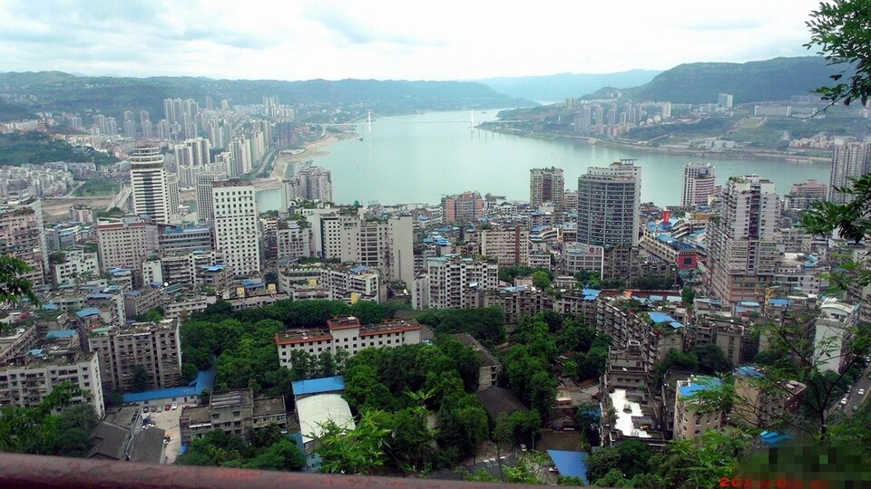

A SENSE OF PLACE / 中国重庆万州
A river runs through the story.
Wanzhou sits on the Yangtze River in northeastern Chongqing. Look beyond the serving tray to the landscape, everyday life, and shared tables that give this food its setting.

Wanzhou from Taibaiyan · May 2013 · Wu Xiansheng / CC BY 3.0The city behind the flavor
Where the river sets the rhythm.
万川毕汇，万家有味。
Meet Wanzhou, on the Yangtze River in northeastern Chongqing, China. Hills, riverfront streets, and everyday meals create a sense of place that reaches far beyond a single dish.
Life along the Yangtze
The river connects the city to a wider landscape of movement, exchange, and food traditions.
A seat at the table
A shared tray invites conversation. Friends gather, vegetables simmer, and a meal unfolds at its own pace.
A meal with a sense of place.
Food offers a way into a city. In Wanzhou grilled fish, the aroma of the grill, a generously seasoned tray, and the rhythm of a shared meal form an introduction to local life.